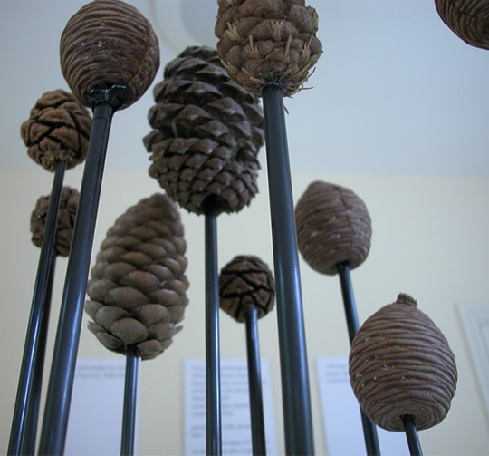
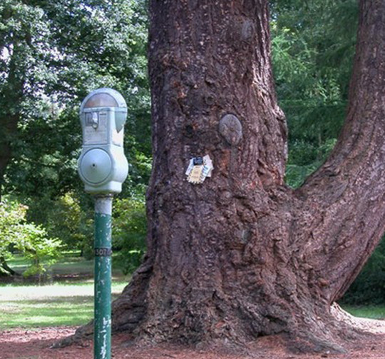
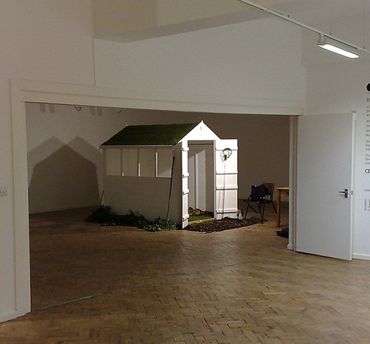
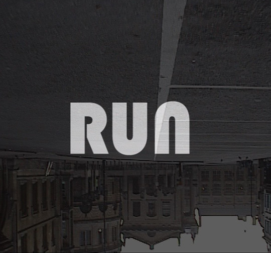
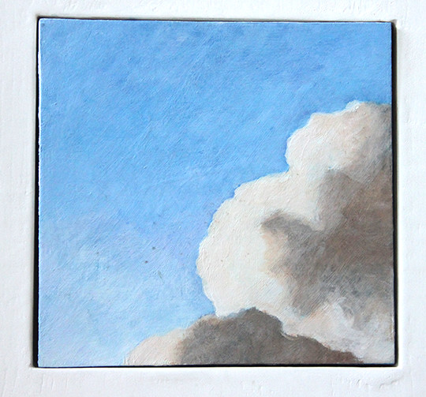
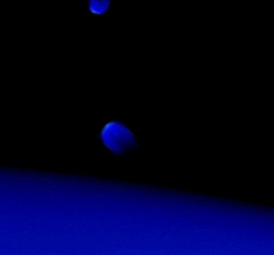
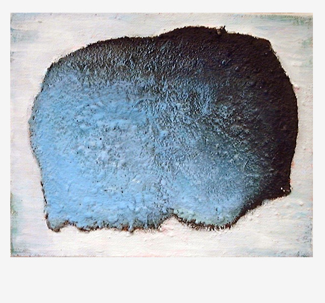
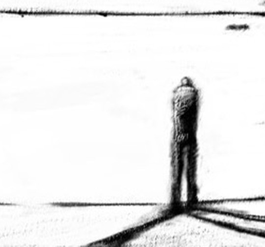
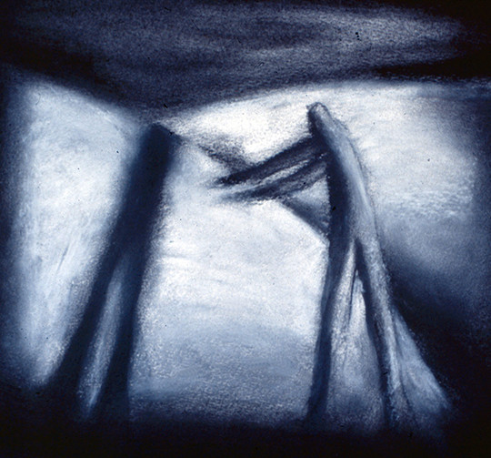
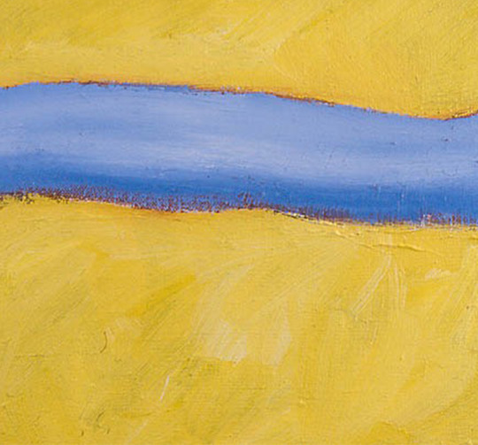

Alun Ward
A UK artist working with sound, natural objects, moving and still images.Sea Hear

Recorded memories and experiences of the sea are relayed through miniature speakers embedded in pebbles. The recordings mingle and merge into a sea of sound.
Megasporangiate Strobili
Pine cones with loudspeakers broadcast sounds recorded over a three week residency in an arboretum.
Park Meter
The Pinetum is no place to park your tree.
Transporter Mix
A participatory installation that invites you into three environments linked, via similar sounds, to very different locations and places in time.
RUN
A film exploring the world at our feet when we run - sound recordings and slow film.
Kamarupa
Cloud paintings past and present - details from photographs and paintings.
Fly Me to the Moon
A computer generated animation played back in a portable structure housing three monitors and a PC.
Goldschmidt's Miscellany
A set of 14 paintings inspired by the asteroid discoveries of nineteenth century painter and astronomer Hermann Goldschmidt.
Shadow Me
A seven minute animation based on earlier shadow drawings with music by composer Pia Silvi.
Shadow drawings
A series of shadow drawings searching for a narrative, and alluding to Adalbert von Chamisso's nineteenth century tale of Peter Schlemihl.
Abstract
A selection of abstract oil and acrylic paintings dating from 1994 to 2003.